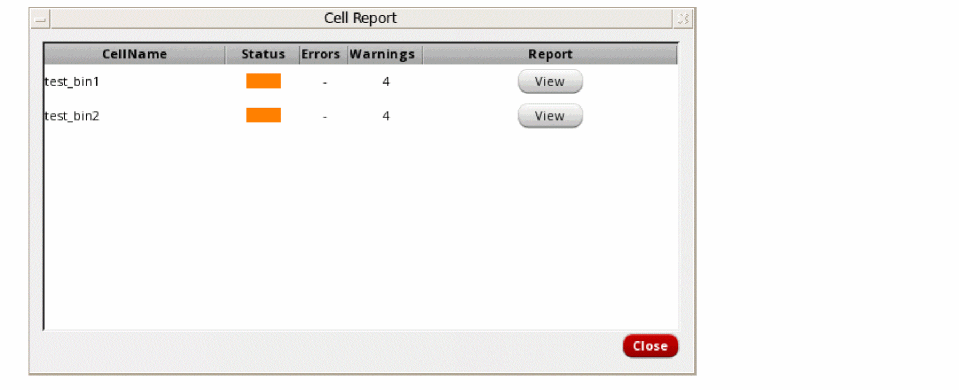
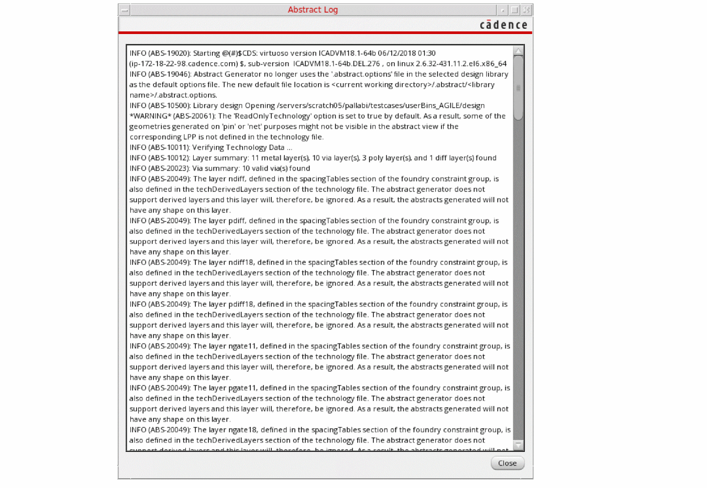
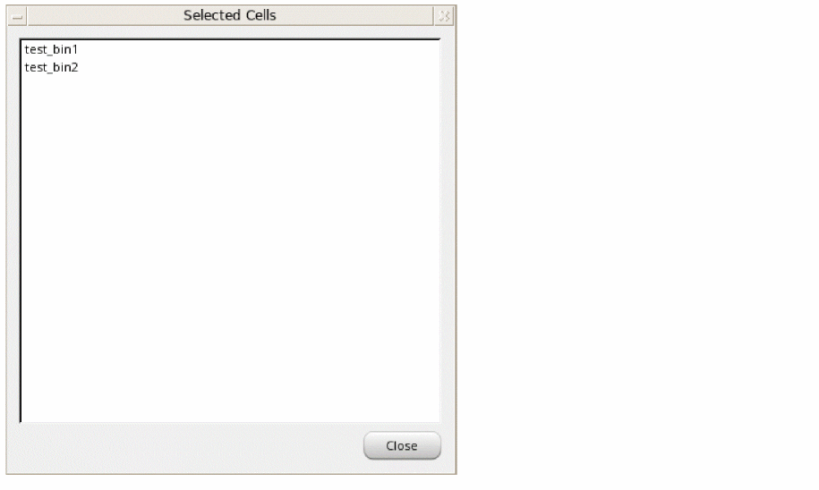

6
Integrated Abstract Generator
This chapter describes how to use the integrated Abstract Generator to generate abstracts while you are working on layout designs in the Virtuoso design environment.
The integrated Abstract Generator offers a subset of the standalone Abstract Generator tool, with the minimum and mandatory GUI options. It is presented as a form in which all the abstract steps are available, segregated through progressive disclosure buttons, with the most frequently used options as part of main Abstract Generator flow steps.
This chapter includes the following sections:
- Launching the Integrated Abstract Generator
- Customizing the Interface
- Generating Abstracts
- Environment Variables
- Form Descriptions
Launching the Integrated Abstract Generator
The integrated Abstract Generator in the Virtuoso design environment is a simple interface to generate abstracts for one or more cellviews.
To launch the integrated Abstract Generator interface, do the following:
Corresponding SKILL API:
Customizing the Interface
To keep the user interface as simple as possible, when you launch the integrated Abstract Generator interface, only the Design Information section is visible by default. Sections corresponding to the Pins, Extract, and Abstract steps are hidden. Set the following environment variables to t to display these sections by default.
Pins: showPinsSection
Extract: showExtractSection, showAntennaOptions, showExtractGspecTables
Abstract: showAbstractSection, showOverlapBoundaryOption, showPinGroupingOptions
When you set these environment variables to t, the Abstract Generator form looks like this:
Generating Abstracts
You can perform the following operations during the abstract generation process.
Loading Values in the Abstract Generator Form
To initialize the fields in the Abstract Generator form, do the following:
-
Select a library.
The library list is read in from thecds.libfile located in the run directory, and libraries are listed in an alphabetical order. When you select a library, the Cell(s) list is automatically populated. -
From the Cell(s) list, select the required cells. Use one of the following selection methods:
- Select one or multiple cells by clicking their names.
- Select multiple consecutive cells by clicking a cell and dragging the cursor across all the cells to be selected without releasing the mouse button. Release the mouse button after all the required cells have been selected.
-
Select all cells by using the
Ctrl+Abindkey.
The number of cells selected is displayed in the status bar.
To deselect cells:- Click the individual cells to be deselected.
-
To deselect all the cells at one go, use the
Ctrl+Dbindkey.
The Filter Cells field lets you filter out cells based on their names. For example, typetopto filter out cells that contain the string in their name. - In the View field, specify the view name in which you want to create abstracts.
- From the Design Type drop-down list, select a design type. Design type indicates the type of cells to be processed in this abstract run: Block (default), Core, IO, and Corner.
-
(Optional) Specify a Top Metal layer. If you specify a top metal layer, the layers listed in the Extract and Abstract steps are automatically restricted to the specified top metal layer. This means that abstract shapes are generated only for objects on the specified layer and its lower layers, and not for any others. For example, if Top Metal is set to
M3, then the other layer options are reset to include only layersM3and its lower layers. Abstract shapes are generated only for objects on these layers. - In the Options File field, specify the path from where Abstract Generator loads the options.
- Click Load Options.
Loading the Options File
After you click Load Options, Abstract Generator loads the options file in the following order:
-
The options file (
.abstract.options) from the <current working directory>/.abstract/<library name>directory is loaded. If not available in the above location, Abstract Generator reads the file first from the attached technology library directory and then from the design library directory. - The file specified in the Options File field in the Abstract Generator form is loaded.
If the same options are available in the next file loaded, the options are overwritten accordingly.
Running the Abstract Generator Steps
When all the options are loaded, the Abstract Generator form features separate sections for each of the abstract generation steps.
Pins Step
Pins is the first step of the abstract generation process. The environment variable controls the visibility of the Pins section. You can use the progressive disclosure arrow to reveal or hide the options.
The integrated Abstract Generator performs the following operations during the Pins step:
- Preserve Local Blockages: This option controls how Abstract Generator processes local blockages present in the layout view.
- Create Pins From Labels: This option creates physical pin shapes corresponding to the geometry overlapping the text labels. Additionally, specify the text labels in the Label to Pin Map field. Abstract Generator creates pins by mapping overlapping geometries to text labels specified in this field.
Extract Step
Extract, the second stage in the abstract generation process, involves extraction of new pins by tracing the physical connections starting from pins created in the Pins step. Antenna numbers are also calculated based on the options selected.
The showExtractSection, showAntennaOptions, and showExtractGspecTables environment variables control the visibility of various options in the Extract section. You can use the progressive disclosure arrow to reveal or hide the options.
The integrated Abstract Generator performs the following functions during the Extract step:
-
Extracts Connectivity Information
- Choose whether you want to extract connectivity information for Signal, Power, or both types of nets.
-
Connectivity specifies the connectivity between layers. You can specify the layer connectivity without having to add via definitions in the technology file. The format for entering a value in this field is to list the layers as a number of entries; each entry being a combination of two or three layers.
(layer1 layer2 layer3) (layer4 layer5 layer6) ... (layer7 layer8) ...
Example:
(M1 M2 VIA1)(M2 M3 VIA2)(M4 M5)
-
Calculates Antenna Information
- Choose Calculate Antenna to create process antenna information for custom blocks and standard cells.
-
Use the Gate and Drain text boxes to assign layers to antenna regions to identify the gate and drain regions and to enable antenna calculation.
The Gate region is identified as the intersection of the firstPolylayer with all diffusion layers. Example: (Poly and Active). Here,Polyis the gate identification layer.
The Drain region is identified as theandnotof the first diffusion layer with allPolylayers. Example: (Active andnot Poly). Here, the diffusion layer acts as the drain identification layer.The integrated Abstract Generator form supports only one Oxide model. This means that only the first diffusion layer is identified as the drain region. If there is more than one diffusion layer in the technology file, then the drain identification must be set through the options file. In this case, the form shows only the first drain region identification setting.
-
Extracts Connectivity Information for Signal and Power Nets
Signal Nets:- Signal Layers lists all signal layers to be extracted. Select Use Signal GSpec for Power GSpec to extract the geometry specifications for these layers.
- Pin Layers lists all the layers on which pins need to be created for signal nets.
Power Nets:- Power Layers lists all power layers to be extracted. Select Use Signal GSpec for Power GSpec to extract the geometry specifications for these layers.
-
Pin Layers lists all the layers on which pins need to be created for power nets.The Signal Layers and Power Layers list is controlled by the Top Metal layer specified in the Design Information section. For example, if Top Metal is set to
M3, then only layerM3and its lower layers can be listed in the Signal Layers and Power Layers text boxes. Therefore, Abstract Generator can be run only on these layers.
Abstract Step
Abstract is the third, and final step of the abstract generation process. The environment variable controls the visibility of the Abstract section. You can use the progressive disclosure arrow to reveal or hide the options.
The integrated Abstract Generator performs the following operations during the Abstract step:
-
Creates Boundary Pins
The Create Boundary Pins option lets you create square pins at the boundary from the extracted pin geometries. Choose whether you want to create boundary pins for Signal nets, Power nets, or both.
Use the Create Overlap Boundary option to specify whether a rectilinear PR boundary (overlap) should be generated during abstraction. If the.abstract.optionsfile is loaded, the layers specified in theAbstractOverlapLayerssection are used to create the overlap boundary. -
Groups Signal and Power Nets
The Signal Grouping and Power Grouping options control how the pin geometries are grouped for corresponding signal and P/G nets. This is useful for blocks with numerous signal and/or power pins on different layers. Signal Grouping and Power Grouping are cyclic fields that provide the following options: -
Adds Cover Blockages
Use the Cover Blockages text box to specify the layers to be considered while creating cover blockages. If a layer is removed from this list, then the layer is considered while created detailed blockages. -
Cuts Blockages around Pins
Pin CutOut lists the layers on which pin cutouts need to be created. Pin cutouts are applicable for all types of blockages: cover, detailed, and shrink. -
Generates Rectangular Geometries for Blockages and Pins
The Fracture Blockages and Fracture Pins options let you generate only rectangular geometries for pins and blockages in the final abstract view. When the options are selected, all generated pins and blockages in the abstract view are fractured to generate only rectangular geometries. Otherwise, their shapes are retained.
Viewing Results
After updating values in the above sections, click Generate Abstract to run Abstract Generator. The Abstract Log window is displayed. You can use this window to check whether the results are satisfactory. You can also use the Cell Report window to check the status of the cells that were included in the abstract generation process.
Viewing the Cell Report
-
In the Abstract Generator form, choose Tools - Show Cell Report.
The Cell Report window is displayed.
CellName column displays a list of all the cells that are selected in the Cell(s) field in the Design Information section of the Abstract Generator form.
Status column displays the status of the cells, green indicates no errors or warnings, orange indicates warnings, and red indicates errors during abstract generation.
Errors displays the number of errors that were reported during abstract generation.
Warnings displays the number of warnings that were reported during abstract generation.
Report displays the View button against every cell. Click the button to view detailed information about the abstract generation process, including the time taken for abstract generation, types of blockages created on different layers, and the complete list of errors and warnings that were reported.
Viewing Log Information
The Abstract Log window displays runtime information, including all the information, warning, and error messages issued by Abstract Generator during the current session.
-
In the Abstract Generator form, choose Tools - Show Abstract Log.
The Abstract Log window is displayed.
The log information is also written to the CDS.log file.
Viewing the List of Cells
The Selected Cells window displays a list of all the cells that are selected in the Cell(s) field in the Design Information section of the Abstract Generator form.
-
In the Abstract Generator form, choose Tools - Show Selected Cells.
The Selected Cells window is displayed.
Environment Variables
This section provides information on the environment variables that can be used with the integrated Abstract Generator. Only the following environment variables are supported for public use:
- optionsFile
- showAbstractSection
- showAntennaOptions
- showExtractGspecTables
- showExtractSection
- showOverlapBoundaryOption
- showPinsSection
- showPinGroupingOptions
optionsFile
abstract optionsFile string "options_file_path"
Description
Specifies the path to the options file. The default value of this environment variable is an empty string ("").
GUI Equivalent
Examples
envGetVal("abstract" "optionsFile")
envSetVal("abstract" "optionsFile" 'string "server1/abstract/Files/AG.options")
envSetVal("abstract" "optionsFile" 'string "")
Related Topics
showAbstractSection
abstract showAbstractSection boolean { t | nil }
Description
Determines whether the Abstract section is displayed by default when you open the Abstract Generator form. When set to t, the section is displayed. The default value is nil.
GUI Equivalent
Examples
envGetVal("abstract" "showAbstractSection")
envSetVal("abstract" "showAbstractSection" 'boolean t)
envSetVal("abstract" "showAbstractSection" 'boolean nil)
Related Topics
showAntennaOptions
abstract showAntennaOptions boolean { t | nil }
Description
Determines whether the following antenna options are displayed by default when you open the Extract section of the Abstract Generator form:
When set to t, these options are displayed. The default value is nil.
GUI Equivalent
Examples
envGetVal("abstract" "showAntennaOptions")
envSetVal("abstract" "showAntennaOptions" 'boolean t)
envSetVal("abstract" "showAntennaOptions" 'boolean nil)
Related Topics
showExtractGspecTables
abstract showExtractGspecTables boolean { t | nil }
Description
Determines whether the options for extracting connectivity information for signal and power nets are displayed by default when you open the Extract section of the Abstract Generator form. When set to t, the following options are displayed in the Extract section:
GUI Equivalent
|
Signal Layers, Pin Layers, Power Layers, and Use Signal GSpec For Power GSpec |
Examples
envGetVal("abstract" "showExtractGspecTables")
envSetVal("abstract" "showExtractGspecTables" 'boolean t)
envSetVal("abstract" "showExtractGspecTables" 'boolean nil)
Related Topics
showExtractSection
abstract showExtractSection boolean { t | nil }
Description
Determines whether the Extract section is displayed by default when you open the Abstract Generator form. When set to t, the section is displayed. The default value is nil.
GUI Equivalent
Examples
envGetVal("abstract" "showExtractSection")
envSetVal("abstract" "showExtractSection" 'boolean t)
envSetVal("abstract" "showExtractSection" 'boolean nil)
Related Topics
showPinsSection
abstract showPinsSection boolean { t | nil }
Description
Determines whether the Pins section is displayed by default when you open the Abstract Generator form. When set to t, the section is displayed. The default value is nil.
GUI Equivalent
Examples
envGetVal("abstract" "showPinsSection")
envSetVal("abstract" "showPinsSection" 'boolean t)
envSetVal("abstract" "showPinsSection" 'boolean nil)
Related Topics
showOverlapBoundaryOption
abstract showOverlapBoundaryOption boolean { t | nil }
Description
Determines whether the Create Overlap Boundary option is displayed by default when you open the Abstract section of the Abstract Generator form. When set to t, the option is displayed. The default value is nil.
GUI Equivalent
Examples
envGetVal("abstract" "showOverlapBoundaryOption")
envSetVal("abstract" "showOverlapBoundaryOption" 'boolean t)
envSetVal("abstract" "showOverlapBoundaryOption" 'boolean nil)
Related Topics
showPinGroupingOptions
abstract showPinGroupingOptions boolean { t | nil }
Description
Determines whether the options for grouping signal and power nets are displayed by default when you open the Abstract section of the Abstract Generator form. When set to t, the following options are displayed in the Abstract section:
GUI Equivalent
Examples
envGetVal("abstract" "showPinGroupingOptions")
envSetVal("abstract" "showPinGroupingOptions" 'boolean t)
envSetVal("abstract" "showPinGroupingOptions" 'boolean nil)
Related Topics
Form Descriptions
This section describes the various menus and fields of the Abstract Generator form.
File menu includes the Close command to close the Abstract Generator form.
Tools menu includes the following commands:
Show Cell Report displays the status of the cells included in the abstract generation process.
Show Abstract Log displays log information of the current session.
Show Selected Cells displays a list of all the cells that are selected in the Cell(s) field in the Design Information section.
Design Information section includes various details that are specified in the design layout.
Library lets you specify the library containing the cells for which you want to create abstracts. The library list is read in from the cds.lib file located in the run directory, and libraries are listed in an alphabetical order.
Filter Cells lets you filter out cells based on their names. For example, type top to filter out cells that contain the string in their name.
Cell(s) lets you specify the cells for which you want to create abstracts. The Cell(s) list box displays the names of all the cells in the library selected in the Library drop-down list.
View lets you specify the view name in which you want to create abstracts.
Design Type indicates the type of cells to be processed in this abstract run: Block (default), Core, IO, and Corner.
Top Metal lets you specify the top metal layer. If you specify a Top Metal layer, abstract shapes are generated only for objects on the specified layer and its lower layers.
Options File lets you specify the path from where Abstract Generator loads the options.
Load Options loads the options from the specified options file.
Pins extracts pin information.
Environment variable:
Preserve Local Blockages controls how Abstract Generator processes local blockages present in the layout view.
Create Pins From Labels creates physical pin shapes corresponding to the geometry overlapping the text labels.
Label to Pin Map lets you specify the text labels. Abstract Generator creates pins by mapping overlapping geometries to text labels specified in this field. This field is enabled only when the Create Pins From Labels check box is selected.
Extract extracts connectivity data and calculates antenna information.
Environment variables: showExtractSection, showAntennaOptions, showExtractGspecTables
Signal extracts connectivity information for signal nets.
Power extracts connectivity information for power nets.
Calculate Antenna creates process antenna information for custom blocks and standard cells.
Connectivity specifies the connectivity between layers. This field is enabled only when one the three check boxes, Signal, Power, and Calculate Antenna, is selected.
Gate indicates the intersection of the first Poly layer with all diffusion layers in the antenna region. This field is enabled only when the Calculate Antenna check box is selected.
Drain indicates the drain identification layer in the antenna region. It is identified as the andnot of the first diffusion layer with all Poly layers. This field is enabled only when the Calculate Antenna check box is selected.
Signal Layers lists all signal layers to be extracted. This field is enabled only when the Signal or the Calculate Antenna check box is selected.
Pin Layers lists all the layers on which pins need to be created for signal nets. This field is enabled only when the Signal check box is selected.
Use Signal GSpec For Power GSpec extracts geometry specifications for the power layers. This field is enabled only when the Power check box is selected.
Power Layers lists all power layers to be extracted. This field is enabled only when the Power check box is selected.
Pin Layers lists all the layers on which pins need to be created for power nets. This field is enabled only when the Power check box is selected.
Abstract creates the final shapes required by place-and-route tools, and fractures pin shapes into rectangles.
Environment variables: showAbstractSection, showOverlapBoundaryOption, showPinGroupingOptions
Create Boundary Pins lets you create square pins at the boundary from the extracted pin geometries.
Signal creates boundary pins for signal nets.
Power creates boundary pins for power nets.
Create Overlap Boundary lets you specify whether a rectilinear PR boundary (overlap) should be generated during abstraction.
Signal Grouping controls how the pin geometries are grouped for corresponding signal nets. You can choose from Single, Separate, or Overlap (default).
Power Grouping controls how the pin geometries are grouped for corresponding power nets. You can choose from Single, Separate, or Overlap (default).
Cover Blockages lets you specify the layers to be considered while creating cover blockages.
Pin CutOut lets you specify the layers on which pin cutouts need to be created.
Fracture Blockages generates only rectangular geometries for blockages in the final abstract view.
Fracture Pins generates only rectangular geometries for pins in the final abstract view.
Generate Abstract generates abstracts for the selected cells.
Close closes the Abstract Generator form.
Help displays information about the form fields.
Return to top